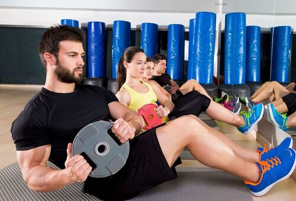

CÓMO CREAR Y MANTENER UNA RUTINA DE ENTRENAMIENTO

Hay que volver a estar en forma. ¿Estás en ello o aún te cuesta retomarlo? No te preocupes, te ayudamos a crear una rutina de ejercicios
que sí puedas cumplir (ya sea por tu cuenta o con la ayuda de un entrenador personal). Porque, sabemos que hay días en los que
simplemente no apetece entrenar. Y esto, si pasa una vez, no pasa nada; pero si la situación se repite más de una vez por semana,
el riesgo de que acabes abandonando y no cumplas tus objetivos se vuelve muy alto. ¡No te rindas! A continuación te damos algunos
consejos para crear una rutina de ejercicios que puedas mantener.
1. Sé consciente de tu objetivo. Debe ser realista y debes tenerlo siempre presente. Tu meta podría ser, por ejemplo, perder peso, mejorar
la figura, desarrollar más músculo o mejorar tu estado físico. Lo mejor es limitarse a un solo objetivo, para que realmente puedas
enfocarte en él. Ten en cuenta que es mucho más difícil mantener la disciplina en una rutina de ejercicios si tienes que dividir tu
atención y energía.
2. Planifica los ejercicios con la ayuda de nuestros profesionales de Slim-fit de acuerdo a tu objetivo. Si lo que quieres es aumentar la resistencia física, una buena idea es establecer
un plazo de tres meses para concentrarte en el cardio. La máquina de correr, la bicicleta estática y hacer muchas repeticiones con pesas
ligeras te ayudarán a conseguirlo. Otro ejemplo si quieres desarrollar más masa muscular: concéntrate en el entrenamiento de fuerza
y utiliza más peso tanto en las máquinas como con pesas. No hace falta que hagas tantas repeticiones, la idea es que puedas ir
aumentando el peso gradualmente. Mantén el enfoque de tu entrenamiento, visualiza los objetivos, ten disciplina y ¡disfruta de los
resultados! Solicita la ayuda de nuestros entrenadores siempre que lo necesites.
3. Involucra a tus amigos o a tu familia para que te motiven de forma positiva. A veces, las relaciones sociales pueden afectar a tu
entrenamiento. Las cañas de después del trabajo, las salidas, las cenas de los fines de semana... En muchas ocasiones es difícil escapar
de estos eventos sociales. Aunque tampoco es necesario que los evites. Lo mejor es que puedas compatibilizarlos con tu rutina de
entrenamiento. Para lograrlo, lo principal es dejar claro a tus amigos, familiares y conocidos que para ti es importante seguir la
rutina de entrenamiento que te has propuesto para lograr tus objetivos y que agradecerías mucho que te puedan ayudar a conseguirlo.
Seguro que colaborarán y acabarán motivándote a que no te saltes la rutina e incluso adaptarán sus planes a tus horarios para que
puedas compatibilizar ambas actividades.
4. Comparte tu progreso. Comparte tu progreso con las personas que te apoyan. Muéstrales lo que estás haciendo, cómo estás cambiando
y que poco a poco estás llegando a tus metas. Una opción es echarte fotos y observar tu progreso para tener puntos comparativos de
los cambios que poco a poco vas logrando. ¡Súper motivador! Otra opción es apuntar en un cuaderno la rutina de ejercicios que estás
siguiendo, anotando qué es lo que hiciste en X día y cómo te fue después de cada entrenamiento. Recuerda, ve en progreso. Trata de
subir la intensidad, peso o repeticiones progresivamente.

5.Planifica y agenda.
Una rutina de ejercicios se consigue gracias a una buena planificación. Así que si deseas que el ejercicio sea parte de tu estilo de vida,
tendrás que añadirlo a tu agenda de actividades, al igual que el trabajo, socializar o ir a clase. Ya que el ejercicio es una de las
primeras actividades que posponemos cuando tenemos un día ajetreado, si lo integras en tu rutina, no lo dejarás pasar por alto. Así
que ya sabes, considéralo una parte permanente e importante de tu programa semanal.
6. ¡Disfruta y diviértete!
Encuentra entranamientos que te divierta, que te dé energía o que te haga sentir bien. La música puede ayudarte.
Si una parte del entrenamiento es un poco aburrida, asegúrate de tener a mano tu playlist favorita. De esa forma, podrás aumentar
la diversión y motivarte a ti mismo.
7.Personal Training Intro
Si aún así no lo ves claro, a veces un personal trainer puede ser de gran ayuda a la hora de crear y mantener tu rutina de
ejercicios. Con Personal Training Intro, una sesión introductoria al entrenamiento personal, contarás con un entrenador personal
certificado que te ayudará a enfocar tu entrenamiento en 60 minutos. Independientemente de tu nivel o experiencia, tu entrenador te
ayudará a alcanzar tu objetivo deportivo y personal. Te mostrará qué y qué no debes hacer, y te aconsejará, para así aumentar tus
conocimientos, disfrutar del entrenamiento, conseguir resultados más rápidos y reducir el riesgo de lesión.
En resumen, comprométete con tu rutina de ejercicios, planifica tus entrenamientos, comparte tus objetivos y logros
e incluye ejercicios que te hagan sentir bien. Y pide ayuda si la necesitas. No es tan difícil, ya verás. ¡A por ello!